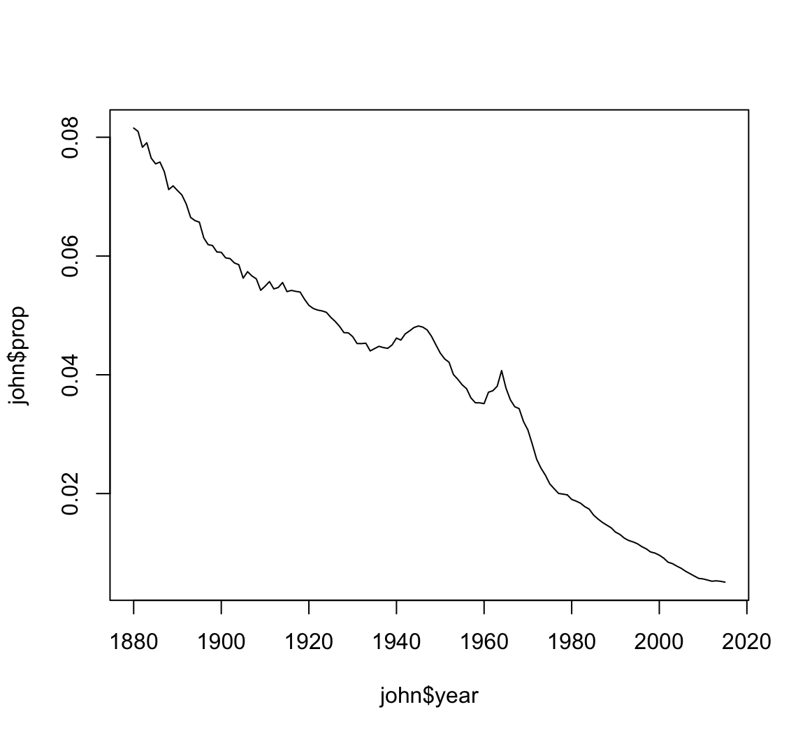
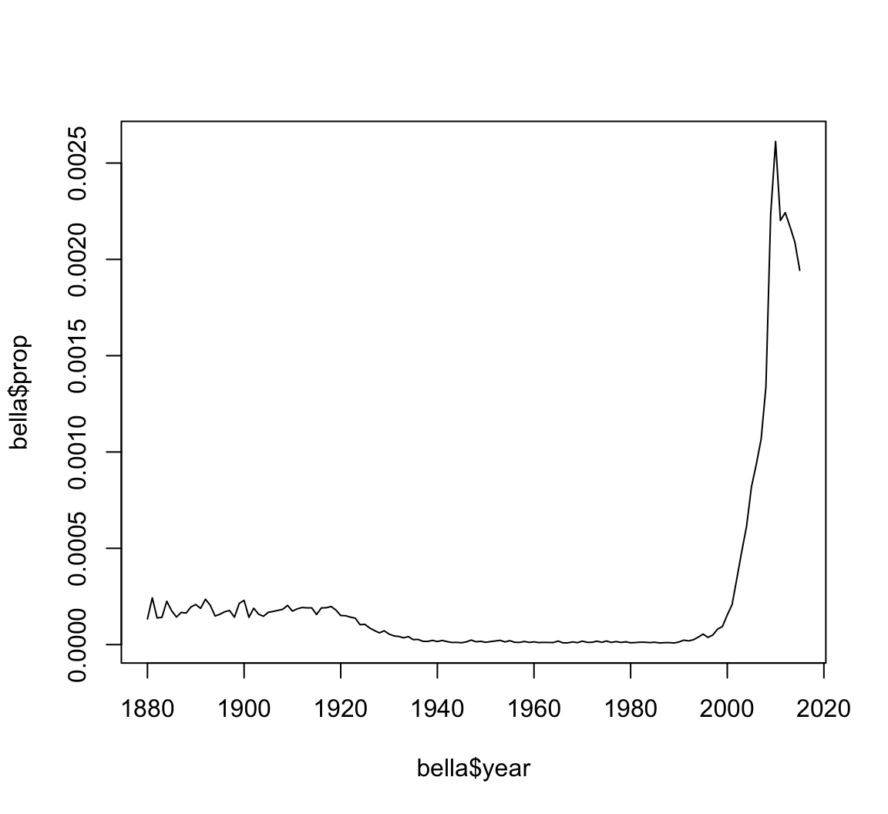

Primary Packages
dplyr: data manipulationggplot2: data visualizationpurrr: functional programmingreadr: data importtibble: modernization of data framestidyr: data tidying

Data wrangling is loosely defined as the process of manually converting or mapping data from one “raw” form into another format that allows for more convenient consumption of the data with the help of semi-automated tools.
It typically follows a set of general steps which begin with extracting the data in a raw form from the data source, “wrangling” the raw data using algorithms (e.g. sorting) or parsing the data into predefined data structures, and finally depositing the resulting content into a data sink for storage and future use.
These steps are typically taken in a data science project.
The bold terms are part of data wrangling.
“Happy families are all alike; every unhappy family is unhappy in its own way.” – Leo Tolstoy
“Tidy datasets are all alike, but every messy dataset is messy in its own way.” – Hadley Wickham
From R for Data Science.
Tidy datasets are easy to manipulate, model and visualize, and have a specific structure: each variable is a column, each observation is a row, and each type of observational unit is a table.
From Wickham (2014), “Tidy Data”, Journal of Statistical Software
A dataset is a collection of values, usually either numbers (if quantitative) or strings (if qualitative). Values are organized in two ways. Every value belongs to a variable and an observation. A variable contains all values that measure the same underlying attribute (like height, temperature, duration) across units. An observation contains all values measured on the same unit (like a person, or a day, or a race) across attributes.
From: Wickham H (2014), “Tidy Data”, Journal of Statistical Software
According to the Titanic data from the datasets package: 367 males survived, 1364 males perished, 344 females survived, and 126 females perished.
How should we organize these data?
| Survived | Perished | |
|---|---|---|
| Male | 367 | 1364 |
| Female | 344 | 126 |
| fate | sex | number |
|---|---|---|
| perished | male | 1364 |
| perished | female | 126 |
| survived | male | 367 |
| survived | female | 344 |
For example, fate and sex do not satisfy these criteria in the Titanic data, but perished/survived and female/male do.
When the data are in tidy format, one can design functions around this format to consistently and intuitively perform data wrangling and analysis operations. The packages containing these are called the “tidyverse.”
Note: The idea of tidy data was first proposed by Hadley Wickham and he created several of the core packages, so this used to be called (semi-seriously) the “hadleyverse.”
The tidyverse is a set of packages that work in harmony because they share common data representations and API design. The
tidyversepackage is designed to make it easy to install and load core packages from the tidyverse in a single command.
dplyr: data manipulationggplot2: data visualizationpurrr: functional programmingreadr: data importtibble: modernization of data framestidyr: data tidyingtidyverse> library(tidyverse)
Loading tidyverse: ggplot2
Loading tidyverse: tibble
Loading tidyverse: tidyr
Loading tidyverse: readr
Loading tidyverse: purrr
Loading tidyverse: dplyr
Conflicts with tidy packages ----------------------------------
filter(): dplyr, stats
lag(): dplyr, statstidyr PackageThis package provides a variety of functions that allow one to tidy data.
Importantly, it solves two common ways that data come as untidy.
gather(): Gathers a variable distributed across two or more columns into a single column.spread(): Spreads a column containing two or more variables into one column per variable.This does not satisfy the definition of tidy data because a variable’s observations are distributed as column names.
> df <- tibble(sex=c("male", "female"),
+ survived=c(367, 344),
+ perished=c(1364, 126))
> df
# A tibble: 2 × 3
sex survived perished
<chr> <dbl> <dbl>
1 male 367 1364
2 female 344 126gather()We apply the gather() function to make a column containing the survived and perished observations.
> df %<>% gather(survived, perished,
+ key="fate", value="number")
> df
# A tibble: 4 × 3
sex fate number
<chr> <chr> <dbl>
1 male survived 367
2 female survived 344
3 male perished 1364
4 female perished 126spread()This example is here to show that spread() does the opposite operation as gather(). It isn’t used appropriately here because we revert the data back to untidy format.
> df %>% spread(key=fate, value=number)
# A tibble: 2 × 3
sex perished survived
* <chr> <dbl> <dbl>
1 female 126 344
2 male 1364 367spread()Median cost of home and median income per city are two variables included in a single column. This means we need to use spread().
> df
# A tibble: 4 × 3
city median_value dollars
<chr> <chr> <dbl>
1 Boston home 527300
2 Boston income 71738
3 Raleigh home 215700
4 Raleigh income 65778> df %>% spread(key=median_value, value=dollars)
# A tibble: 2 × 3
city home income
* <chr> <dbl> <dbl>
1 Boston 527300 71738
2 Raleigh 215700 65778Tidy data are in “wide format” in that they have a column for each variable and there is one observed unit per row.
However, sometimes it’s useful to transform to “long format.” The simplest long format data have two columns. The first column contains the variable names and the second colum contains the values for the variables. There are “wider” long format data that have additional columns that identify connections between observations.
Wide format data is useful for some analyses and long format for others.
reshape2 PackageThe reshape2 package has three important functions: melt, dcast, and acast. It allows one to move between wide and long tidy data formats.
> library("reshape2")
Attaching package: 'reshape2'
The following object is masked from 'package:tidyr':
smiths
> library("datasets")
> data(airquality, package="datasets")
> names(airquality)
[1] "Ozone" "Solar.R" "Wind" "Temp" "Month" "Day"
> dim(airquality)
[1] 153 6
> airquality <- as_tibble(airquality)> head(airquality)
# A tibble: 6 × 6
Ozone Solar.R Wind Temp Month Day
<int> <int> <dbl> <int> <int> <int>
1 41 190 7.4 67 5 1
2 36 118 8.0 72 5 2
3 12 149 12.6 74 5 3
4 18 313 11.5 62 5 4
5 NA NA 14.3 56 5 5
6 28 NA 14.9 66 5 6> tail(airquality)
# A tibble: 6 × 6
Ozone Solar.R Wind Temp Month Day
<int> <int> <dbl> <int> <int> <int>
1 14 20 16.6 63 9 25
2 30 193 6.9 70 9 26
3 NA 145 13.2 77 9 27
4 14 191 14.3 75 9 28
5 18 131 8.0 76 9 29
6 20 223 11.5 68 9 30Melting can be thought of as melting a piece of solid metal (wide data), so it drips into long format.
> aql <- melt(airquality)
No id variables; using all as measure variables
> head(aql)
variable value
1 Ozone 41
2 Ozone 36
3 Ozone 12
4 Ozone 18
5 Ozone NA
6 Ozone 28> tail(aql)
variable value
913 Day 25
914 Day 26
915 Day 27
916 Day 28
917 Day 29
918 Day 30In the previous example, we lose the fact that a set of measurements occurred on a particular day and month, so we can do a guided melt to keep this information.
> aql <- melt(airquality, id.vars = c("Month", "Day"))
> head(aql)
Month Day variable value
1 5 1 Ozone 41
2 5 2 Ozone 36
3 5 3 Ozone 12
4 5 4 Ozone 18
5 5 5 Ozone NA
6 5 6 Ozone 28> tail(aql)
Month Day variable value
607 9 25 Temp 63
608 9 26 Temp 70
609 9 27 Temp 77
610 9 28 Temp 75
611 9 29 Temp 76
612 9 30 Temp 68Casting allows us to go from long format to wide format data. It can be visualized as pouring molten metal (long format) into a cast to create a solid piece of metal (wide format).
Casting is more difficult because choices have to be made to determine how the wide format will be organized. It often takes some thought and experimentation for new users.
Let’s do an example with dcast, which is casting for data frames.
dcast> aqw <- dcast(aql, Month + Day ~ variable)
> head(aqw)
Month Day Ozone Solar.R Wind Temp
1 5 1 41 190 7.4 67
2 5 2 36 118 8.0 72
3 5 3 12 149 12.6 74
4 5 4 18 313 11.5 62
5 5 5 NA NA 14.3 56
6 5 6 28 NA 14.9 66> tail(aqw)
Month Day Ozone Solar.R Wind Temp
148 9 25 14 20 16.6 63
149 9 26 30 193 6.9 70
150 9 27 NA 145 13.2 77
151 9 28 14 191 14.3 75
152 9 29 18 131 8.0 76
153 9 30 20 223 11.5 68dplyr Packagedplyr is a package with the following description:
A fast, consistent tool for working with data frame like objects, both in memory and out of memory.
This package offers a “grammar” for manipulating data frames.
Everything that dplyr does can also be done using basic R commands – however, it tends to be much faster and easier to use dplyr.
dplyrVerbs:
filter: extract a subset of rows from a data frame based on logical conditionsarrange: reorder rows of a data framerename: rename variables in a data frameselect: return a subset of the columns of a data frame, using a flexible notationPartially based on R Programming for Data Science
dplyrVerbs (continued):
mutate: add new variables/columns or transform existing variablesdistinct: returns only the unique values in a tablesummarize: generate summary statistics of different variables in the data frame, possibly within stratagroup_by: breaks down a dataset into specified groups of rowsPartially based on R Programming for Data Science
> library("dplyr", verbose=FALSE)
> library("babynames")
> ls()
character(0)
> babynames <- as_tibble(babynames::babynames)
> ls()
[1] "babynames"babynames Object> class(babynames)
[1] "tbl_df" "tbl" "data.frame"
> dim(babynames)
[1] 1825433 5> babynames
# A tibble: 1,825,433 × 5
year sex name n prop
<dbl> <chr> <chr> <int> <dbl>
1 1880 F Mary 7065 0.07238359
2 1880 F Anna 2604 0.02667896
3 1880 F Emma 2003 0.02052149
4 1880 F Elizabeth 1939 0.01986579
5 1880 F Minnie 1746 0.01788843
6 1880 F Margaret 1578 0.01616720
7 1880 F Ida 1472 0.01508119
8 1880 F Alice 1414 0.01448696
9 1880 F Bertha 1320 0.01352390
10 1880 F Sarah 1288 0.01319605
# ... with 1,825,423 more rows> set.seed(201)
> sample_n(babynames, 10)
# A tibble: 10 × 5
year sex name n prop
<dbl> <chr> <chr> <int> <dbl>
1 1991 M Esaias 5 2.359700e-06
2 1933 F Maida 33 3.155410e-05
3 1967 M Alvis 33 1.853916e-05
4 1905 M Gaylord 11 7.679151e-05
5 1993 F Kyleigh 157 7.965969e-05
6 1927 M Della 8 6.886519e-06
7 1908 F Luberta 12 3.384753e-05
8 1968 F Andrea 7086 4.145300e-03
9 1921 F Ardelle 50 3.907288e-05
10 1955 M Dainel 7 3.351657e-06
> # try also sample_frac(babynames, 6e-6)%>% OperatorOriginally from R package magrittr. Provides a mechanism for chaining commands with a forward-pipe operator, %>%.
> x <- 1:10
>
> x %>% log(base=10) %>% sum
[1] 6.559763
>
> sum(log(x,base=10))
[1] 6.559763> babynames %>% sample_n(5)
# A tibble: 5 × 5
year sex name n prop
<dbl> <chr> <chr> <int> <dbl>
1 1979 M Sunil 42 2.344364e-05
2 1996 F Kelina 5 2.608857e-06
3 1991 F Gimena 7 3.443326e-06
4 1979 M Neilson 9 5.023636e-06
5 1984 F Romelia 5 2.774045e-06filter()> filter(babynames, year==1880, sex=="F")
# A tibble: 942 × 5
year sex name n prop
<dbl> <chr> <chr> <int> <dbl>
1 1880 F Mary 7065 0.07238359
2 1880 F Anna 2604 0.02667896
3 1880 F Emma 2003 0.02052149
4 1880 F Elizabeth 1939 0.01986579
5 1880 F Minnie 1746 0.01788843
6 1880 F Margaret 1578 0.01616720
7 1880 F Ida 1472 0.01508119
8 1880 F Alice 1414 0.01448696
9 1880 F Bertha 1320 0.01352390
10 1880 F Sarah 1288 0.01319605
# ... with 932 more rows
> # same as filter(babynames, year==1880 & sex=="F")> filter(babynames, year==1880, sex=="F", n > 5000)
# A tibble: 1 × 5
year sex name n prop
<dbl> <chr> <chr> <int> <dbl>
1 1880 F Mary 7065 0.07238359arrange()> arrange(babynames, name, year, sex)
# A tibble: 1,825,433 × 5
year sex name n prop
<dbl> <chr> <chr> <int> <dbl>
1 2007 M Aaban 5 2.260251e-06
2 2009 M Aaban 6 2.834029e-06
3 2010 M Aaban 9 4.390297e-06
4 2011 M Aaban 11 5.429927e-06
5 2012 M Aaban 11 5.440091e-06
6 2013 M Aaban 14 6.961721e-06
7 2014 M Aaban 16 7.882569e-06
8 2011 F Aabha 7 3.622491e-06
9 2012 F Aabha 5 2.587144e-06
10 2014 F Aabha 9 4.642684e-06
# ... with 1,825,423 more rowsarrange()> arrange(babynames, desc(name), desc(year), sex)
# A tibble: 1,825,433 × 5
year sex name n prop
<dbl> <chr> <chr> <int> <dbl>
1 2010 M Zzyzx 5 2.439054e-06
2 2014 M Zyyon 6 2.955964e-06
3 2010 F Zyyanna 6 3.067323e-06
4 2009 M Zyvion 5 2.361691e-06
5 2010 M Zytavious 6 2.926865e-06
6 2009 M Zytavious 7 3.306368e-06
7 2007 M Zytavious 6 2.712301e-06
8 2006 M Zytavious 7 3.196664e-06
9 2005 M Zytavious 5 2.352830e-06
10 2004 M Zytavious 6 2.841628e-06
# ... with 1,825,423 more rowsrename()> rename(babynames, number=n)
# A tibble: 1,825,433 × 5
year sex name number prop
<dbl> <chr> <chr> <int> <dbl>
1 1880 F Mary 7065 0.07238359
2 1880 F Anna 2604 0.02667896
3 1880 F Emma 2003 0.02052149
4 1880 F Elizabeth 1939 0.01986579
5 1880 F Minnie 1746 0.01788843
6 1880 F Margaret 1578 0.01616720
7 1880 F Ida 1472 0.01508119
8 1880 F Alice 1414 0.01448696
9 1880 F Bertha 1320 0.01352390
10 1880 F Sarah 1288 0.01319605
# ... with 1,825,423 more rowsselect()> select(babynames, sex, name, n)
# A tibble: 1,825,433 × 3
sex name n
<chr> <chr> <int>
1 F Mary 7065
2 F Anna 2604
3 F Emma 2003
4 F Elizabeth 1939
5 F Minnie 1746
6 F Margaret 1578
7 F Ida 1472
8 F Alice 1414
9 F Bertha 1320
10 F Sarah 1288
# ... with 1,825,423 more rows
> # same as select(babynames, sex:n)select()> select(babynames, sex, name, number=n)
# A tibble: 1,825,433 × 3
sex name number
<chr> <chr> <int>
1 F Mary 7065
2 F Anna 2604
3 F Emma 2003
4 F Elizabeth 1939
5 F Minnie 1746
6 F Margaret 1578
7 F Ida 1472
8 F Alice 1414
9 F Bertha 1320
10 F Sarah 1288
# ... with 1,825,423 more rowsmutate()> mutate(babynames, total_by_year=round(n/prop))
# A tibble: 1,825,433 × 6
year sex name n prop total_by_year
<dbl> <chr> <chr> <int> <dbl> <dbl>
1 1880 F Mary 7065 0.07238359 97605
2 1880 F Anna 2604 0.02667896 97605
3 1880 F Emma 2003 0.02052149 97605
4 1880 F Elizabeth 1939 0.01986579 97605
5 1880 F Minnie 1746 0.01788843 97605
6 1880 F Margaret 1578 0.01616720 97605
7 1880 F Ida 1472 0.01508119 97605
8 1880 F Alice 1414 0.01448696 97605
9 1880 F Bertha 1320 0.01352390 97605
10 1880 F Sarah 1288 0.01319605 97605
# ... with 1,825,423 more rows
> # see also transmutateLet’s put a few things together now adding the function distinct()…
> babynames %>% mutate(total_by_year=round(n/prop)) %>%
+ select(sex, year, total_by_year) %>% distinct()
# A tibble: 270 × 3
sex year total_by_year
<chr> <dbl> <dbl>
1 F 1880 97605
2 M 1880 118400
3 F 1881 98856
4 M 1881 108284
5 F 1882 115698
6 M 1882 122033
7 F 1883 120064
8 M 1883 112480
9 F 1884 137588
10 M 1884 122741
# ... with 260 more rowssummarize()> summarize(babynames, mean_n = mean(n), median_n = median(n),
+ number_sex = n_distinct(sex),
+ distinct_names = n_distinct(name))
# A tibble: 1 × 4
mean_n median_n number_sex distinct_names
<dbl> <int> <int> <int>
1 184.6879 12 2 93889group_by()> babynames %>% group_by(year, sex)
Source: local data frame [1,825,433 x 5]
Groups: year, sex [270]
year sex name n prop
<dbl> <chr> <chr> <int> <dbl>
1 1880 F Mary 7065 0.07238359
2 1880 F Anna 2604 0.02667896
3 1880 F Emma 2003 0.02052149
4 1880 F Elizabeth 1939 0.01986579
5 1880 F Minnie 1746 0.01788843
6 1880 F Margaret 1578 0.01616720
7 1880 F Ida 1472 0.01508119
8 1880 F Alice 1414 0.01448696
9 1880 F Bertha 1320 0.01352390
10 1880 F Sarah 1288 0.01319605
# ... with 1,825,423 more rows> babynames %>% group_by(year, sex) %>%
+ summarize(total_by_year=sum(n))
Source: local data frame [270 x 3]
Groups: year [?]
year sex total_by_year
<dbl> <chr> <int>
1 1880 F 90993
2 1880 M 110491
3 1881 F 91954
4 1881 M 100745
5 1882 F 107850
6 1882 M 113688
7 1883 F 112321
8 1883 M 104629
9 1884 F 129022
10 1884 M 114445
# ... with 260 more rowsCompare to earlier slide. Why the difference?
> babynames %>% group_by(sex) %>%
+ summarize(mean_n = mean(n),
+ distinct_names_sex = n_distinct(name))
# A tibble: 2 × 3
sex mean_n distinct_names_sex
<chr> <dbl> <int>
1 F 154.4542 64911
2 M 228.6588 39199> top_names <- babynames %>% group_by(year, sex) %>%
+ summarize(top_name = name[which.max(n)])
>
> head(top_names)
Source: local data frame [6 x 3]
Groups: year [3]
year sex top_name
<dbl> <chr> <chr>
1 1880 F Mary
2 1880 M John
3 1881 F Mary
4 1881 M John
5 1882 F Mary
6 1882 M John> tail(top_names, n=10)
Source: local data frame [10 x 3]
Groups: year [5]
year sex top_name
<dbl> <chr> <chr>
1 2010 F Isabella
2 2010 M Jacob
3 2011 F Sophia
4 2011 M Jacob
5 2012 F Sophia
6 2012 M Jacob
7 2013 F Sophia
8 2013 M Noah
9 2014 F Emma
10 2014 M Noah> top_names %>% filter(year >= 1990 & year < 2000, sex=="F")
Source: local data frame [10 x 3]
Groups: year [10]
year sex top_name
<dbl> <chr> <chr>
1 1990 F Jessica
2 1991 F Ashley
3 1992 F Ashley
4 1993 F Jessica
5 1994 F Jessica
6 1995 F Jessica
7 1996 F Emily
8 1997 F Emily
9 1998 F Emily
10 1999 F Emily> top_names %>% filter(year >= 1990 & year < 2000, sex=="M")
Source: local data frame [10 x 3]
Groups: year [10]
year sex top_name
<dbl> <chr> <chr>
1 1990 M Michael
2 1991 M Michael
3 1992 M Michael
4 1993 M Michael
5 1994 M Michael
6 1995 M Michael
7 1996 M Michael
8 1997 M Michael
9 1998 M Michael
10 1999 M Jacob> # Analyzing the name 'John'
> john <- babynames %>% filter(sex=="M", name=="John")
> plot(john$year, john$prop, type="l")
> # Analyzing the name 'Bella'
> bella <- babynames %>% filter(sex=="F", name=="Bella")
> plot(bella$year, bella$prop, type="l")
You should study additional tutorials of dplyr that utilize other data sets:
dplyr introductory vignettedplyr Package” chapterdplyr Featuresdplyr can be found onlinedplyr can work with other data frame backends such as SQL databasesDBI packagedplyr can be integrated with the data.table package for large fast tablesdplyr and data.tableIn many data analyses you will have multiple tables of related data that must be combined in order to carry out your analysis.
The dplyr package includes a number of tools to facilitate this.
Here are two data frames that are related through a common variable called key.
> x <- tibble(key = c(1, 2, 3), x_val = c("x1", "x2", "x3"))
> y <- tibble(key = c(1, 2, 4), y_val = c("y1", "y2", "y4"))> x
# A tibble: 3 × 2
key x_val
<dbl> <chr>
1 1 x1
2 2 x2
3 3 x3
> y
# A tibble: 3 × 2
key y_val
<dbl> <chr>
1 1 y1
2 2 y2
3 4 y4To work with relational data you need verbs that work with pairs of tables. There are three families of verbs designed to work with relational data.
From R for Data Science
inner_join()An inner-join matches pairs of observations when their keys are equal.
> inner_join(x, y, key="key")
Joining, by = "key"
# A tibble: 2 × 3
key x_val y_val
<dbl> <chr> <chr>
1 1 x1 y1
2 2 x2 y2left_join()A left-join keeps all observations in the first argument, x.
> left_join(x, y, key="key")
Joining, by = "key"
# A tibble: 3 × 3
key x_val y_val
<dbl> <chr> <chr>
1 1 x1 y1
2 2 x2 y2
3 3 x3 <NA>> x %>% left_join(y, key="key")
Joining, by = "key"
# A tibble: 3 × 3
key x_val y_val
<dbl> <chr> <chr>
1 1 x1 y1
2 2 x2 y2
3 3 x3 <NA>right_join()A right-join keeps all observations in the second argument, y.
> right_join(x, y)
Joining, by = "key"
# A tibble: 3 × 3
key x_val y_val
<dbl> <chr> <chr>
1 1 x1 y1
2 2 x2 y2
3 4 <NA> y4full_join()A full-join keeps all observations in either argument, x or y.
> full_join(x, y, key="key")
Joining, by = "key"
# A tibble: 4 × 3
key x_val y_val
<dbl> <chr> <chr>
1 1 x1 y1
2 2 x2 y2
3 3 x3 <NA>
4 4 <NA> y4anti_join()An anti-join removes all observations in the first argument, x, that appear in the second argument, y.
> anti_join(x, y, key="key")
Joining, by = "key"
# A tibble: 1 × 2
key x_val
<dbl> <chr>
1 3 x3semi_join()A semi-join keeps all observations in the first argument, x, that have a match in the second argument, y.
> semi_join(x, y, key="key")
Joining, by = "key"
# A tibble: 2 × 2
key x_val
<dbl> <chr>
1 1 x1
2 2 x2When one of the two data frames has repeated key values, the observations are repeated in the other data frame.
> y2
# A tibble: 4 × 2
key y_val
<dbl> <chr>
1 1 y1
2 2 y2a
3 2 y2b
4 4 y4> x %>% left_join(y2, key="key")
Joining, by = "key"
# A tibble: 4 × 3
key x_val y_val
<dbl> <chr> <chr>
1 1 x1 y1
2 2 x2 y2a
3 2 x2 y2b
4 3 x3 <NA>intersect(x, y): return only observations in both x and yunion(x, y): return unique observations in x and ysetdiff(x, y): return observations in x, but not in yFrom R for Data Science
setdiff()> df1
# A tibble: 2 × 2
x y
<dbl> <dbl>
1 1 1
2 2 1
> df2
# A tibble: 2 × 2
x y
<dbl> <dbl>
1 1 1
2 1 2
> setdiff(df1, df2)
# A tibble: 1 × 2
x y
<dbl> <dbl>
1 2 1.RData FilesR objects can be saved to binary .RData files and loaded with the save (or save.image) and load functions, respectively.
This is the easiest way to get data into R.
readr PackageThere are a number of R packages that provide more sophisticated tools for getting data in and out of R, especially as data sets have become larger and larger.
One of those packages is readr for text files. It reads and writes data quickly, provides a useful status bar for large files, and does a good job at determining data types.
readr is organized similarly to the base R functions. For example, there are functions read_table, read_csv, write_tsv, and write_csv.
See also fread and fwrite from the data.table package.
There are several packages that facilitate “scraping” data from the web, including rvest demonstrated here.
> library("rvest")
> schedule <- read_html("http://jdstorey.github.io/asdscourse/schedule/")
> first_table <- html_table(schedule)[[1]]
> names(first_table) <- c("week", "topics", "reading")
> first_table[2,"week"]
[1] 2
> first_table[2,"topics"] %>% strsplit(split=" ")
[[1]]
[1] "Data Wrangling"
> first_table[2,"reading"] %>% strsplit(split=" ")
[[1]]
[1] "R4DS Ch. 5, 9-16"
> grep("R4DS", first_table$reading)
[1] 1 2 3The rvest documentation recommends SelectorGadget, which is “a javascript bookmarklet that allows you to interactively figure out what css selector you need to extract desired components from a page.”
> usg_url <- "http://princetonusg.com/meet-your-usg-officers/"
> usg <- read_html(usg_url)
> officers <- html_nodes(usg, ".team-member-name") %>%
+ html_text
> head(officers, n=20)
[1] "Aleksandra Czulak" "Jeremy Burton"
[3] "Hunter Dong" "Daniel Qian"
[5] "Sung Won Chang" "Pooja Patel"
[7] "Miranda Rosen" "Michael Asparrin"
[9] "Devin Kilpatrick" "Pritika Mehra"
[11] "Olivia Grah" "Lucas Ramos"
[13] "Ellie Shannon" "Nicholas Wu"
[15] "Wendy Zhao" "Kishan Bhatt"
[17] "Cailin Hong" "Myesha Jemison"
[19] "Eli Schechner" "Ruby Guo" API stands for “application programming interface” which is a set of routines, protocols, and tools for building software and applications.
A specific website may provide an API for scraping data from that website.
There are R packages that provide an interface with specific APIs, such as the twitteR package.
Smith and Kruglyak (2008) is a study that measured 2820 genotypes in 109 yeast F1 yeast segregants from a cross between parental lines BY and RM.
They also measured gene expression on 4482 genes in each of these segregants when growing in two different Carbon sources, glucose and ethanol.
The data was distributed as a collection of matrices in R.
> rm(list=ls())
> load("../data/smith_kruglyak.RData")
> ls()
[1] "exp.e" "exp.g" "exp.pos" "marker"
[5] "marker.pos"
> eapply(env=.GlobalEnv, dim)
$exp.e
[1] 4482 109
$exp.g
[1] 4482 109
$marker
[1] 2820 109
$exp.pos
[1] 4482 3
$marker.pos
[1] 2820 2> exp.g %>% cbind(rownames(exp.g), .) %>% as_tibble() %>%
+ print()
# A tibble: 4,482 × 110
`` X100g.20_4_c.glucose X101g.21_1_d.glucose
<chr> <chr> <chr>
1 YJR107W 0.22 0.18
2 YPL270W -0.29 -0.2
3 YDR518W 0.72 0.04
4 YDR233C 0.23 0.31
5 YHR098C 0.4 -0.04
6 YFR029W -0.36 0.35
7 YPL198W 0.23 -0.21
8 YDR001C -0.09 0.57
9 YLR394W -0.23 0.13
10 YCR079W -0.25 -0.98
# ... with 4,472 more rows, and 107 more variables:
# X102g.21_2_d.glucose <chr>, X103g.21_3_d.glucose <chr>,
# X104g.21_4_d.glucose <chr>, X105g.21_5_c.glucose <chr>,
# X106g.22_2_d.glucose <chr>, X107g.22_3_b.glucose <chr>,
# X109g.22_5_d.glucose <chr>, X10g.2_5_d.glucose <chr>,
# X110g.23_3_d.glucose <chr>, X111g.23_5_d.glucose <chr>,
# X112g.24_1_d.glucose <chr>, X113g.25_1_d.glucose <chr>,
# X114g.25_3_d.glucose <chr>, X115g.25_4_d.glucose <chr>,
# X116g.26_1_d.glucose <chr>, X117g.26_2_d.glucose <chr>,
# X11g.2_6_d.glucose <chr>, X12g.2_7_a.glucose <chr>,
# X13g.3_1_d.glucose <chr>, X15g.3_3_d.glucose <chr>,
# X16g.3_4_d.glucose <chr>, X17g.3_5_d.glucose <chr>,
# X18g.4_1_c.glucose <chr>, X1g.1_1_d.glucose <chr>,
# X20g.4_3_d.glucose <chr>, X21g.4_4_d.glucose <chr>,
# X22g.5_1_d.glucose <chr>, X23g.5_2_d.glucose <chr>,
# X24g.5_3_d.glucose <chr>, X25g.5_4_d.glucose <chr>,
# X26g.5_5_d.glucose <chr>, X27g.6_1_d.glucose <chr>,
# X28g.6_2_b.glucose <chr>, X29g.6_3_c.glucose <chr>,
# X30g.6_4_d.glucose <chr>, X31g.6_5_d.glucose <chr>,
# X32g.6_6_d.glucose <chr>, X33g.6_7_d.glucose <chr>,
# X34g.7_1_d.glucose <chr>, X35g.7_2_c.glucose <chr>,
# X36g.7_3_d.glucose <chr>, X37g.7_4_c.glucose <chr>,
# X38g.7_5_d.glucose <chr>, X39g.7_6_c.glucose <chr>,
# X3g.1_3_d.glucose <chr>, X40g.7_7_c.glucose <chr>,
# X41g.7_8_d.glucose <chr>, X42g.8_1_a.glucose <chr>,
# X43g.8_2_d.glucose <chr>, X44g.8_3_a.glucose <chr>,
# X45g.8_4_c.glucose <chr>, X46g.8_5_b.glucose <chr>,
# X47g.8_6_c.glucose <chr>, X48g.8_7_b.glucose <chr>,
# X49g.9_1_d.glucose <chr>, X4g.1_4_d.glucose <chr>,
# X50g.9_2_d.glucose <chr>, X51g.9_3_d.glucose <chr>,
# X52g.9_4_d.glucose <chr>, X53g.9_5_d.glucose <chr>,
# X54g.9_6_d.glucose <chr>, X55g.9_7_d.glucose <chr>,
# X56g.10_1_c.glucose <chr>, X57g.10_2_d.glucose <chr>,
# X58g.10_3_c.glucose <chr>, X59g.10_4_d.glucose <chr>,
# X5g.1_5_c.glucose <chr>, X60g.11_1_a.glucose <chr>,
# X61g.11_2_d.glucose <chr>, X62g.11_3_b.glucose <chr>,
# X63g.12_1_d.glucose <chr>, X64g.12_2_b.glucose <chr>,
# X65g.13_1_a.glucose <chr>, X66g.13_2_c.glucose <chr>,
# X67g.13_3_b.glucose <chr>, X68g.13_4_a.glucose <chr>,
# X69g.13_5_c.glucose <chr>, X70g.14_1_b.glucose <chr>,
# X71g.14_2_c.glucose <chr>, X73g.14_4_a.glucose <chr>,
# X74g.14_5_b.glucose <chr>, X75g.14_6_d.glucose <chr>,
# X76g.14_7_c.glucose <chr>, X77g.15_2_d.glucose <chr>,
# X78g.15_3_b.glucose <chr>, X79g.15_4_d.glucose <chr>,
# X7g.2_2_d.glucose <chr>, X80g.15_5_b.glucose <chr>,
# X82g.16_1_d.glucose <chr>, X83g.17_1_a.glucose <chr>,
# X84g.17_2_d.glucose <chr>, X85g.17_4_a.glucose <chr>,
# X86g.17_5_b.glucose <chr>, X87g.18_1_d.glucose <chr>,
# X88g.18_2_d.glucose <chr>, X89g.18_3_d.glucose <chr>,
# X8g.2_3_d.glucose <chr>, X90g.18_4_c.glucose <chr>,
# X92g.19_1_c.glucose <chr>, X93g.19_2_c.glucose <chr>, ...> exp.pos %>% cbind(rownames(exp.pos), .) %>% as_tibble() %>%
+ print()
# A tibble: 4,482 × 4
`` Chromsome Start_coord End_coord
<chr> <chr> <chr> <chr>
1 YJR107W 10 627333 628319
2 YPL270W 16 30482 32803
3 YDR518W 4 1478600 1480153
4 YDR233C 4 930353 929466
5 YHR098C 8 301937 299148
6 YFR029W 6 210925 212961
7 YPL198W 16 173151 174701
8 YDR001C 4 452472 450217
9 YLR394W 12 907950 909398
10 YCR079W 3 252842 254170
# ... with 4,472 more rowsThe gene names are contained in the row names.
> head(rownames(exp.g))
[1] "YJR107W" "YPL270W" "YDR518W" "YDR233C" "YHR098C" "YFR029W"
> head(rownames(exp.e))
[1] "YJR107W" "YPL270W" "YDR518W" "YDR233C" "YHR098C" "YFR029W"
> head(rownames(exp.pos))
[1] "YJR107W" "YPL270W" "YDR518W" "YDR233C" "YHR098C" "YFR029W"
> all.equal(rownames(exp.g), rownames(exp.e))
[1] TRUE
> all.equal(rownames(exp.g), rownames(exp.pos))
[1] TRUEThe segregants are column names, and they are inconsistent across matrices.
> head(colnames(exp.g))
[1] "X100g.20_4_c.glucose" "X101g.21_1_d.glucose"
[3] "X102g.21_2_d.glucose" "X103g.21_3_d.glucose"
[5] "X104g.21_4_d.glucose" "X105g.21_5_c.glucose"
> head(colnames(marker))
[1] "20_4_c" "21_1_d" "21_2_d" "21_3_d" "21_4_d" "21_5_c"
>
> #fix column names with gsub
> colnames(exp.g) %<>% strsplit(split=".", fixed=TRUE) %>%
+ lapply(function(x) {x[2]})
> colnames(exp.e) %<>% strsplit(split=".", fixed=TRUE) %>%
+ lapply(function(x) {x[2]})
> head(colnames(exp.g))
[1] "20_4_c" "21_1_d" "21_2_d" "21_3_d" "21_4_d" "21_5_c"Let’s first pull out rownames of exp.pos and make them a column in the data frame.
> gene_pos <- exp.pos %>% as_tibble() %>%
+ mutate(gene = rownames(exp.pos)) %>%
+ dplyr::select(gene, chr = Chromsome, start = Start_coord,
+ end = End_coord)
> print(gene_pos, n=7)
# A tibble: 4,482 × 4
gene chr start end
<chr> <int> <int> <int>
1 YJR107W 10 627333 628319
2 YPL270W 16 30482 32803
3 YDR518W 4 1478600 1480153
4 YDR233C 4 930353 929466
5 YHR098C 8 301937 299148
6 YFR029W 6 210925 212961
7 YPL198W 16 173151 174701
# ... with 4,475 more rowsWe melt the expression matrices and bind them together into one big tidy data frame.
> exp_g <- melt(exp.g) %>% as_tibble() %>%
+ dplyr::select(gene = Var1, segregant = Var2,
+ expression = value) %>%
+ mutate(condition = "glucose")
> exp_e <- melt(exp.e) %>% as_tibble() %>%
+ dplyr::select(gene = Var1, segregant = Var2,
+ expression = value) %>%
+ mutate(condition = "ethanol")
> print(exp_e, n=4)
# A tibble: 488,538 × 4
gene segregant expression condition
<fctr> <fctr> <dbl> <chr>
1 YJR107W 20_4_c 0.06 ethanol
2 YPL270W 20_4_c -0.13 ethanol
3 YDR518W 20_4_c -0.94 ethanol
4 YDR233C 20_4_c 0.04 ethanol
# ... with 4.885e+05 more rowsCombine gene expression data from two conditions into a single data frame.
> exp_all <- bind_rows(exp_g, exp_e)
> sample_n(exp_all, size=10)
# A tibble: 10 × 4
gene segregant expression condition
<fctr> <fctr> <dbl> <chr>
1 YBL087C 21_4_d -0.72 ethanol
2 YDR524C 21_2_d -0.17 glucose
3 YGR067C 9_1_d -3.92 glucose
4 YHR207C 26_1_d -0.43 ethanol
5 YDR329C 20_2_d -0.06 glucose
6 YGL121C 8_7_b 1.00 ethanol
7 YJR044C 3_3_d -0.12 ethanol
8 YIL088C 2_7_a 0.10 ethanol
9 YML127W 5_1_d -0.08 ethanol
10 YMR304W 6_1_d 0.20 ethanolNow we want to join the gene positions with the expression data.
> exp_all <- exp_all %>%
+ mutate(gene = as.character(gene),
+ segregant = as.character(segregant))
> sk_tidy <- exp_all %>%
+ left_join(gene_pos, by = "gene")
> sample_n(sk_tidy, size=7)
# A tibble: 7 × 7
gene segregant expression condition chr start end
<chr> <chr> <dbl> <chr> <int> <int> <int>
1 YGL189C 1_3_d -0.26 ethanol 7 148594 148235
2 YBR257W 13_2_c 0.02 ethanol 2 728880 729719
3 YER098W 21_1_d 0.46 ethanol 5 355462 357726
4 YCR035C 9_1_d 0.07 glucose 3 193014 191830
5 YBR097W 17_5_b -0.03 glucose 2 436945 441309
6 YBR235W 8_4_c -0.18 ethanol 2 686896 690258
7 YJL094C 14_6_d 0.00 glucose 10 254437 251816dplyr FunctionsNow that we have the data made tidy in the data frame sk_tidy, let’s apply some dplyr operations…
Does each gene have the same number of observations?
> sk_tidy %>% group_by(gene) %>%
+ summarize(value = n()) %>%
+ summary()
gene value
Length:4478 Min. :218.0
Class :character 1st Qu.:218.0
Mode :character Median :218.0
Mean :218.6
3rd Qu.:218.0
Max. :872.0 No, so let’s see which genes have more than one set of observations.
> sk_tidy %>% group_by(gene) %>%
+ summarize(value = n()) %>%
+ filter(value > median(value))
# A tibble: 4 × 2
gene value
<chr> <int>
1 YFR024C-A 872
2 YJL012C 872
3 YKL198C 872
4 YPR089W 872Let’s remove replicated measurements for these genes.
> sk_tidy %<>% distinct(gene, segregant, condition,
+ .keep_all = TRUE)
>
> sk_tidy %>% group_by(gene) %>%
+ summarize(value = n()) %>%
+ summary()
gene value
Length:4478 Min. :218
Class :character 1st Qu.:218
Mode :character Median :218
Mean :218
3rd Qu.:218
Max. :218 As an exercise, think about how you would use dplyr to replace the replicated gene expression values with a single averaged expression value for these genes.
Get the mean and standard deviation expression per chromosome.
> sk_tidy %>%
+ group_by(chr) %>%
+ summarize(mean = mean(expression), sd=sd(expression))
# A tibble: 16 × 3
chr mean sd
<int> <dbl> <dbl>
1 1 -0.07618458 0.8257397
2 2 -0.04471450 0.6322533
3 3 -0.02296456 0.6815490
4 4 -0.02325893 0.5368523
5 5 -0.05793524 0.6098741
6 6 -0.07721815 0.6598159
7 7 -0.04409662 0.6174735
8 8 -0.04743984 0.6377910
9 9 -0.04298423 0.6144313
10 10 -0.02994634 0.5701558
11 11 -0.03964107 0.6130319
12 12 -0.05146305 0.6432055
13 13 -0.02646819 0.5835865
14 14 -0.02943206 0.6423964
15 15 -0.01301063 0.5544749
16 16 -0.03681626 0.6044444Get the mean and standard deviation expression per chromosome in each condition.
> sk_tidy %>%
+ group_by(chr, condition) %>%
+ summarize(mean = mean(expression), sd=sd(expression))
Source: local data frame [32 x 4]
Groups: chr [?]
chr condition mean sd
<int> <chr> <dbl> <dbl>
1 1 ethanol 0.0260098709 0.4796494
2 1 glucose -0.1783790350 1.0549134
3 2 ethanol 0.0131661446 0.4793614
4 2 glucose -0.1025951501 0.7503419
5 3 ethanol 0.0001644526 0.5360078
6 3 glucose -0.0460935780 0.8004235
7 4 ethanol 0.0018726571 0.4817756
8 4 glucose -0.0483905104 0.5857082
9 5 ethanol -0.0297045435 0.4787130
10 5 glucose -0.0861659403 0.7163443
# ... with 22 more rowsCount the number of genes per chromosome.
> sk_tidy %>%
+ filter(condition == "glucose", segregant == "20_4_c") %>%
+ group_by(chr) %>%
+ summarize(num.genes = n())
# A tibble: 16 × 2
chr num.genes
<int> <int>
1 1 60
2 2 298
3 3 125
4 4 629
5 5 207
6 6 79
7 7 395
8 8 209
9 9 152
10 10 256
11 11 241
12 12 387
13 13 367
14 14 319
15 15 388
16 16 366Filter for the first gene on every chromosome.
> sk_tidy %>%
+ filter(condition == "glucose", segregant == "20_4_c") %>%
+ group_by(chr) %>%
+ filter(start == min(start))
Source: local data frame [16 x 7]
Groups: chr [16]
gene segregant expression condition chr start end
<chr> <chr> <dbl> <chr> <int> <int> <int>
1 YHL040C 20_4_c -2.79 glucose 8 20968 19085
2 YNL334C 20_4_c -0.90 glucose 14 12876 12208
3 YOL157C 20_4_c -1.06 glucose 15 24293 22524
4 YKL222C 20_4_c 0.09 glucose 11 5621 3504
5 YIL168W 20_4_c -1.14 glucose 9 29032 29415
6 YJL213W 20_4_c 0.84 glucose 10 32163 33158
7 YPL272C 20_4_c -0.18 glucose 16 28164 26611
8 YLL063C 20_4_c -0.66 glucose 12 16072 14648
9 YFL048C 20_4_c -0.09 glucose 6 40180 38843
10 YML132W 20_4_c -0.21 glucose 13 7244 8383
11 YGL261C 20_4_c -0.14 glucose 7 6652 6290
12 YBL107C 20_4_c 0.29 glucose 2 10551 9961
13 YDL248W 20_4_c -0.68 glucose 4 1802 2953
14 YEL073C 20_4_c -0.02 glucose 5 7553 7230
15 YAL062W 20_4_c -5.64 glucose 1 31568 32941
16 YCL068C 20_4_c 0.47 glucose 3 12285 11503To plot expression in glucose versus ethanol we first need to use dcast().
> sk_tidy %>% dcast(gene + segregant ~ condition,
+ value.var = "expression") %>%
+ as_tibble()
# A tibble: 488,102 × 4
gene segregant ethanol glucose
<chr> <chr> <dbl> <dbl>
1 YAL002W 1_1_d 0.37 -0.01
2 YAL002W 1_3_d 0.23 0.03
3 YAL002W 1_4_d 0.08 0.07
4 YAL002W 1_5_c -0.12 0.13
5 YAL002W 10_1_c 0.12 -0.10
6 YAL002W 10_2_d 0.10 -0.20
7 YAL002W 10_3_c 0.07 -0.15
8 YAL002W 10_4_d 0.06 -0.04
9 YAL002W 11_1_a 0.07 -0.07
10 YAL002W 11_2_d 0.30 0.10
# ... with 488,092 more rows> sk_tidy %>% dcast(gene + segregant ~ condition,
+ value.var = "expression") %>%
+ filter(gene == "YAL002W") %>%
+ ggplot(aes(x = glucose, y = ethanol)) +
+ geom_point() + theme_bw() +
+ theme(legend.position = "none")
> sessionInfo()
R version 3.3.2 (2016-10-31)
Platform: x86_64-apple-darwin13.4.0 (64-bit)
Running under: macOS Sierra 10.12.3
locale:
[1] en_US.UTF-8/en_US.UTF-8/en_US.UTF-8/C/en_US.UTF-8/en_US.UTF-8
attached base packages:
[1] stats graphics grDevices utils datasets methods
[7] base
other attached packages:
[1] rvest_0.3.2 xml2_1.1.1 babynames_0.2.1
[4] reshape2_1.4.2 dplyr_0.5.0 purrr_0.2.2
[7] readr_1.0.0 tidyr_0.6.1 tibble_1.2
[10] ggplot2_2.2.1 tidyverse_1.1.1 knitr_1.15.1
[13] magrittr_1.5 devtools_1.12.0
loaded via a namespace (and not attached):
[1] Rcpp_0.12.9 plyr_1.8.4 forcats_0.2.0
[4] tools_3.3.2 digest_0.6.12 lubridate_1.6.0
[7] jsonlite_1.2 evaluate_0.10 memoise_1.0.0
[10] nlme_3.1-131 gtable_0.2.0 lattice_0.20-34
[13] psych_1.6.12 DBI_0.5-1 curl_2.3
[16] yaml_2.1.14 parallel_3.3.2 haven_1.0.0
[19] withr_1.0.2 stringr_1.1.0 httr_1.2.1
[22] revealjs_0.8 hms_0.3 rprojroot_1.2
[25] grid_3.3.2 R6_2.2.0 XML_3.98-1.5
[28] readxl_0.1.1 foreign_0.8-67 rmarkdown_1.3
[31] selectr_0.3-1 modelr_0.1.0 backports_1.0.5
[34] scales_0.4.1 htmltools_0.3.5 assertthat_0.1
[37] mnormt_1.5-5 colorspace_1.3-2 labeling_0.3
[40] stringi_1.1.2 lazyeval_0.2.0 munsell_0.4.3
[43] broom_0.4.1